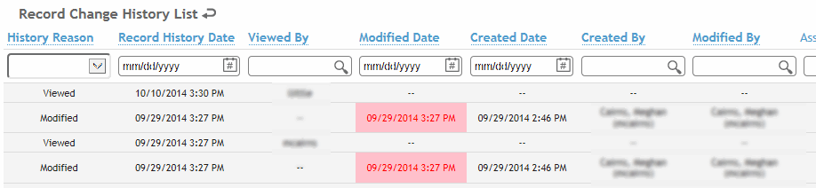

Cority data may be secured several ways:
records and notes may be signed -- no one, including the administrator, will be able to modify the record. The user who signed the record or note is tracked in medical history.
documents attached to a record may be signed - the document cannot be overwritten by another document.
records may be locked - these can be unlocked and modified if the user has proper security rights.
If configured in your system settings, wherever the Sign action exists you may be able to capture your signature digitally, either with your cursor (using the cursor or a touchpad or touch screen) or by using a digital signature pad. You may also be able to just click OK to digitally mark the record as signed without an actual signature - this provides flexibility if you do not require signatures in all scenarios (e.g. you may require a signature for letters but not notes).
The user allowed to sign a medical record varies according to the type of record. For example, some records require the Reviewer to sign while other records require the responsible Practitioner to sign.
If a record was locked before it was signed, the Sign action is still available. Choose Actions»Sign and enter your login password when prompted.
For all notes except Incident and IH: The user identified as the Author can sign the note (choose Actions»Sign and enter your login password when prompted). A signed note is locked from further edits. If a record was locked before it was signed, the Sign action is still available.
For Health Cloud notes: To view all of your unsigned notes, open the list of clinic visits and choose Actions»Review Unsigned Notes. You can filter the list using the Author search list. Select one or more (or all) notes and choose Actions»Sign.
Documents in non-Health Clouds may be signed, which prevents them from being overwritten by another document. In other words, a user may open and edit the document, but won’t be able to re-import and replace the signed one.
You must be granted specific access to sign a document.
If you are in a module record, open the Documents tab. Alternatively, click Documents in any Cloud menu (other than Occupational Health).
Select the checkbox beside the document record, then choose Actions»Sign.
If you have appropriate security privileges, you can lock a record from further edits. If a locked module record contains any Notes, the note is locked but the Problem List and Private Data flags remain editable. The Lock Record action becomes disabled and the Unlock Record action becomes enabled.
If a record was locked before it was signed, the Sign action is still available.
When a record is manually locked or unlocked, a message is shown in bold red text indicating who locked/unlocked the record and when. No message is shown when a record is locked automatically according to the system settings.
Each form includes a Show Record History action that allows you to view a history of changes to that form.
This history includes the date of the change, the user ID who made the change, the type of change (created, modified, deleted) and the fields on the form. Changed information is highlighted in red. The history also displays each time the record was viewed, and by whom.
